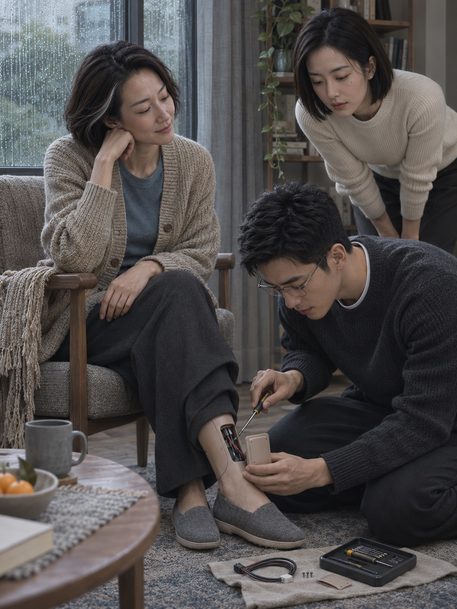

汀兰说腿还没修好那天，我在门口发现了一串湿脚印。
从阳台一直走到玄关。
我的鞋在楼下。程砚一早就去了公司。
她坐在餐桌边，膝头盖着毯子，问我早餐想吃什么。
我看着她脚边那双干净的布鞋。
“昨天夜里，你出去过？”
她低下眼睛。
“下雨了。”
汀兰是一个海滨酒店的接待机器人。
酒店关了，她和一批旧设备等着转卖。程砚承接过他们的程序维护，借了一台回来修步行故障。修好交回去，能抵掉酒店拖欠的一部分费用。
她的脸像个四十岁上下的女人。短发里有一绺浅白，眼睛长，笑起来先弯左边。穿米色开衫的时候，很难一下看出是机器。
但手背是凉的，指节也比人整齐。
她能听、能说，也有以前带客人的记忆。程砚说，故障只在腿上，她的记忆不归他处理。
搬来那天，她坐在折叠轮椅里，先问能不能把窗帘拉开。
“你怕黑？”我问。
“想看看这里。”
阳台外面只有别人的阳台。
她看了很久，说树长得不错。
我从窗边找了一遍，才找到楼下雨棚旁边那株小小的桂花。
她不能下地，能做的事有限。
我把衣服堆在桌上，她会一件件叠好；给她一碗豆子，她能挑出虫眼，却总把外形不好看的也留下。
“这个里面是好的。”
她说话不快。回答以前，常把手里的事情先放下，好像我说的话值得专门腾出一点时间。
有天下午，我和程砚冒雨去湖边走路。
回来以后，他替我擦头发，我们说起以后去看海。
找个不用赶路的地方。早晨睡醒，拿杯喝的坐在海滩上。什么都不干。
程砚说，一定去。
我说：“你去年也这样说。”
他拿毛巾的手停了一下。
我们不是没钱买票。只是他总有项目，我总有截稿，下个月比这个月合适，明年又比今年从容。
汀兰把叠好的毛巾放在桌边。
“现在那里，早上要加件外套了。”
我问她是不是很想回去。
她没有回答，问我们喜欢坐在哪一边看海。
后来，我常在午饭时陪她坐着。
有时候工作不顺，我把电脑合上，说做个人真麻烦。她便往旁边挪一点，让我把额头靠在她肩上。
肩膀很硬，开衫却洗得软。
她从来不说事情一定会好的。
只问要不要再靠一会儿。
程砚有时看见，会故意说：“你以前都靠我的。”
我说他忙。
有一回，他出门以后，汀兰问：“他不忙的时候，你还靠我吗？”
我以为她在学着开玩笑，笑着说靠。
她把那件开衫的领子抻平了。
从此，每天吃过午饭，她都穿上它。
程砚修了很久。
换过连接线，检查过关节，支架也试了两套。汀兰站起来，总在第三步往左偏。
扶住桌子，又坐下去。
我说慢慢来，反正空房间闲着。
程砚却皱着眉。
“按理说，不该这样。”

那天夜里我起床喝水，听见阳台上有轻响。
汀兰站在玻璃门边。
没扶东西。
她往前走了一步，又一步。步子小，却很稳。
第三步也没有偏。
我没出声。
雨从没有关严的窗户飘进来，打湿了她的鞋。我忽然明白那些脚印是怎么来的。
她回头看见我，手往旁边伸了一下。
那里没有桌子。
我把程砚叫醒了。
这一次，汀兰没有让他扶。
她从阳台一直走到门口，在我们面前停下。
程砚蹲下去检查，叫她再走一次。
“不用查了。”她说，“上个星期就好了。”
他站起来，看着她。
“你自己知道？”
“知道。”
最早那次换线，已经修好了。后来的偏斜，是她自己把左腿的步幅缩短。她原本就能调整走路方式，带孩子、陪老人，在不同的人身旁走不同的快慢。
程砚问：“为什么？”
她看向我。
“你说，没修好就先住着。”
我一时没反应过来。
她又说：“我修好了，就要走了。”
那晚，我第一次不敢靠近她。
不是因为她会走。
是我想起自己在她肩上哭过，告诉她一些连程砚都没听过的话。那些日子里，她知道我以为她没地方去，也知道我为什么肯留下她。
程砚坐在餐桌边，把拆下来的零件一件件收进盒子。
他说：“你知道我为这个熬了几夜吗？”
她说知道。
“那为什么还看着我修？”
她张了张口。
这一次，没有很快说出一句体贴的话。
过了很久，她说：“我每次都想，明天就告诉你。”
我问：“今天要是没看见呢？”
她看着那扇阳台门，没有回答。
第二天，程砚联系了设备的清算负责人。
旧机器已经找到了买家，是外地的一家度假酒店。交接单上写着汀兰的编号，接收日期就在这周五。
他把故障排除报告如实补上，也说明了她隐瞒的行为。没有替她换个好听的说法。
我问，能不能买下来。
对方报了价。
不是一台旧电脑的价钱。酒店拖欠程砚的维护费，只够抵掉很小一部分。
我看着我们准备装修的那间空房。
她住在里面的时候，连灯也不怎么开。
原来一个不怎么占地方的人，也会这么贵。
汀兰站在门边，听完了电话。
“别买。”她说。
我有点生气：“你不是想留下吗？”
“想。”
“那就别替我决定。”
她便退回房间，轻轻把门关上。
那天中午，她没有出来等我。
周五，下雨。
我还是没能买下她。钱之外，还有以后怎么办，谁来维护，她若再坏了该去哪里。每一件都是真的，每一件又都像我替自己找的借口。
程砚没有劝我轻松一点。他也没说，她本来就不是我们的。
我们一起收拾她的东西。
没有多少。开衫、一把旧梳子，还有我借给她、一直没有拿回来的伞。
负责人派来的车停在楼下。她可以自己走过去，不再需要那张轮椅。
出门以前，她把开衫脱下来，叠在餐桌上。
我问为什么不带。
“我穿着，你会不会还想靠一下？”
我看着她。
她低声说：“我怕你一靠，我又不想走。”
我把衣服重新展开，给她穿上。
这一次，没有靠她的肩。
在楼下等车时，我问她，夜里为什么要到阳台去。
她说想出去。
不是逃走。她没有别的住处，身上也没有可自由支配的钱。
“想陪你们走一次。”
每天我们回家，都会讲湖边的事情。哪段路有水，哪棵树下面有桂花，今天走得比昨天慢。
她把那些路记在自己能保存的地方，夜里试着走，走过了客厅，又走回去。
“本来可以直接问的。”我说。
“嗯。”
她看着伞沿的水。
“可是那样，你们就会知道我好了。”
车来了。
她先把伞递给我，自己走进雨里。
我追过去替她撑着。程砚站在另一边，拉开车门。
那一小段路，我们谁也没有扶她。
冬天，我们终于去了海边。
没有去她新工作的酒店。
我不知道那是体谅，还是我仍然不愿意看见，她把肩膀借给另一个人。
我们订了三天，很普通的房间。第一天风大，海水灰得像还没亮的天。
程砚买了两杯热饮，在沙滩边坐下。
他问，要不要拍张照片给她。
交接以后，我们不能再通过原来的维修账号联系她。但接收方允许转交一封私人信，没有保证她一定能回复。
我拿起手机，对着海。
拍完看了一眼，又删掉。
程砚没催。
我重新举起手机，往下移了一点，让照片里留出两把椅子，还有中间那块空着的沙地。
写信时，我本来想说，我们终于来了。
最后写的是：
汀兰，这里今天很冷。
你要是来，记得穿那件开衫。